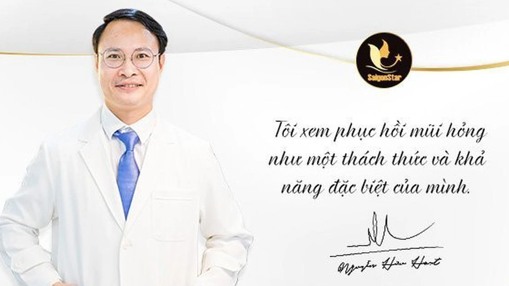
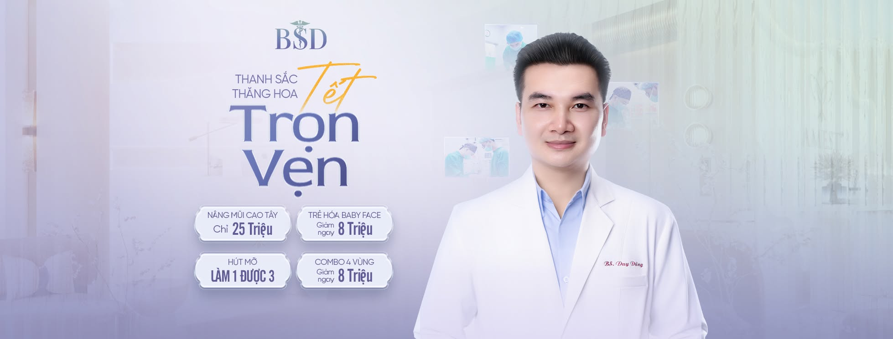
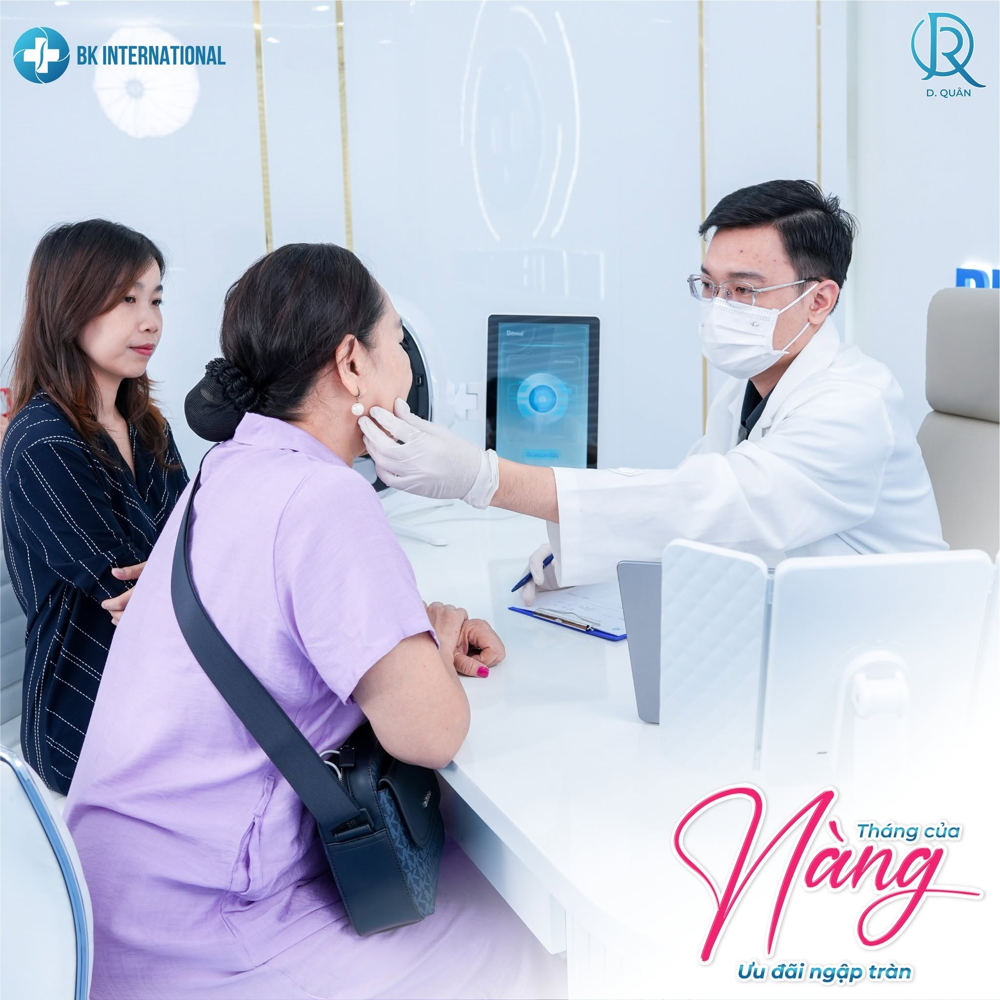
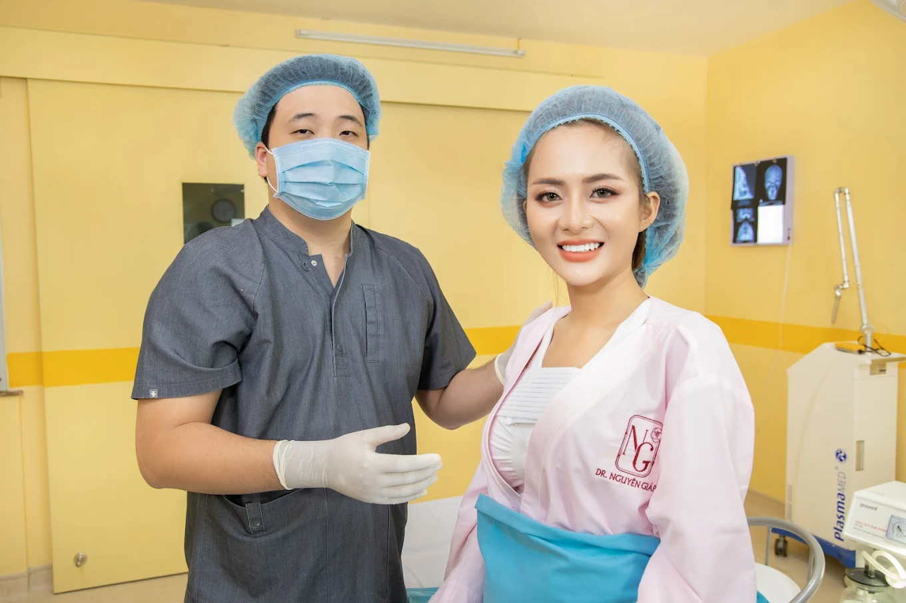

👉 TOP 10 BÁC SĨ CHUYÊN KHOA THẨM MỸ TÍN TẠI TPHCM
Eyemedi là hệ thống nền tảng trực tuyến cung cấp các giải pháp chuyên khoa mắt chăm sóc thị lực và cung cấp các sản phẩm mắt kính cận viễn loạn chính xác. Eyemedi còn là nền tảng kết nối mạng lưới các phòng khám, bác sĩ đa khoa, chuyên khoa ung bướu, chuyên khoa nhi, bác sĩ chuyên khoa phẫu thuật thẩm mỹ. Nhập khẩu và phân phối các sản phẩm mỹ làm đẹp cho Spa, thẩm mỹ viện và cá nhân.✅
Khu vực Quận 10 tập trung rất nhiều các cơ sở thẩm mỹ viện, vậy nên làm đẹp ở đâu uy tín và đảm bảo về giấy phép?

1. Bác sĩ Thẩm Mỹ CK2: Trần Đắc Quang
Phòng khám 366 Cao Thắng, Phường 12, Quận 10, TPHCMBiệt danh "BÁC SĨ SỬA" Chuyên các dịch vụ phẫu thuật thẩm mỹ cắt mí, nâng mũi, nâng ngực, hút mỡ... Đặc biệt sửa mũi hỏng và sửa vùng hút mỡ thô hỏng...

2. Bác sĩ Thẩm Mỹ CK2: Nguyễn Hữu Hoạt
Cơ sở 400 Lê Hồng Phong, Phường 10, Quận 10, TPHCMBiệt danh "BẬC THẦY NÂNG MŨI" chuyên các dịch vụ phẫu thuật thẩm mỹ mũi, mặt, mắt, môi, ngực, bụng...

3. Bác sĩ thẩm mỹ Đoàn Duy Dũng Cơ sở 324/2-4 Lý Thường Kiệt, Phường 14, Quận 10, TP Hồ Chí MinhBác sĩ CKI Đoàn Duy Dũng Chuyên khoa Tạo hình – Phẫu thuật thẩm mỹ Hơn 10 năm kinh nghiệm trong lĩnh vực phẫu thuật tạo hình thẩm mỹ

4. Phòng khám chuyên khoa thẩm mỹ Dr. Quân Địa chỉ: 722 Sư Vạn Hạnh, P. Hòa Hưng, Quận 10, TP. HCMTrẻ Hóa - Xóa Nhăn - Không phẫu thuật. Không sưng đau - Đẹp ngay sau khi làm

5. Phòng Khám Chuyên Khoa Thẩm Mỹ Dr. Nguyên Giáp Cơ sở: 190 Huỳnh Văn Bánh, Phú Nhuận, Hồ Chí MinhBác sĩ nâng mũi đẹp cho Việt Kiều tại TP.HCM - DR Nguyen Giap


👉 Khám và điều trị các bệnh nội khoa về mắt: Viêm kết giác mạc, Bệnh lý đáy mắt
👉 Đo khúc xạ mắt, cắt kính
👉 Bệnh lý về cườm nước – glaucoma
👉 Bệnh lý về cườm khô – đục thủy tinh thể.
👉 Lasik Cận thị – Viễn thị – Lão thị

Bác sĩ Nguyễn Duy Trì là chuyên gia có thâm niên trong lĩnh vực tầm soát, chẩn đoán và điều trị các bệnh lý khối u, đặc biệt chuyên sâu về các bệnh lý tuyến giáp, tuyến vú...
🎯 Các dịch vụ chuyên khoa thế mạnh
👉 Bệnh lý tuyến giáp: Khám, tư vấn, siêu âm chẩn đoán chuyên sâu và lên phác đồ điều trị cho các bệnh lý bướu cổ, suy giáp, cường giáp, và ung thư tuyến giáp. 👉 Tầm soát ung bướu: Thực hiện khám lâm sàng, siêu âm định vị và phát hiện sớm các hạch, u vùng cổ, u vú, bướu phần mềm hoặc các khối u thông thường khác trên cơ thể 👉 Xét nghiệm tế bào (FNA): Chọc hút tế bào bằng kim nhỏ dưới hướng dẫn của siêu âm để chẩn đoán nhanh, chính xác bản chất khối u là lành tính hay ác tính. 👉 Theo dõi định kỳ: Quản lý bệnh án và tái khám định kỳ cho các bệnh nhân ung bướu đã hoặc đang trong quá trình điều trịNgoài vị trí Phó trưởng khoa Y Học Hạt Nhân tại Bệnh Viện Ung Bướu TPHCM. Bác Sĩ Nguyễn Duy Trì còn phụ trách Phòng Khám Chuyên Khoa Ung Bướu Medilabo Việt Nam - Tại đây, bệnh nhân được tư vấn và theo dõi các bệnh lý ung bướu tốt nhất. Phòng khám do BS.CKII Nguyễn Duy Trì trực tiếp phụ trách chuyên môn.

PHÒNG KHÁM CHUYÊN KHOA UNG BƯỚU MEDILABO VIỆT NAM
Địa chỉ: 486 Hoàng Hữu Nam, Phường Long Bình, TP. Hồ Chí Minh
📍 Chỉ đường đến MEDILABO